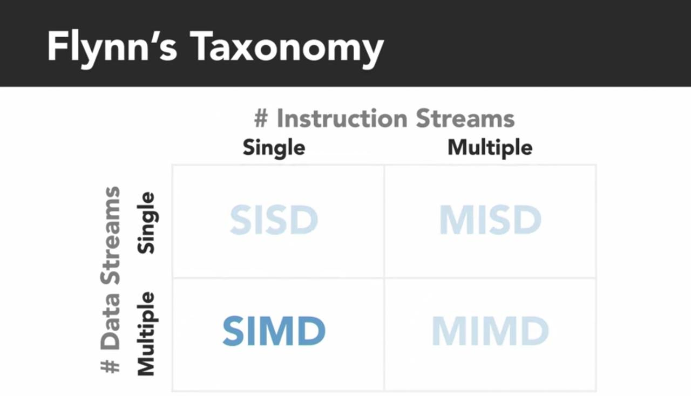
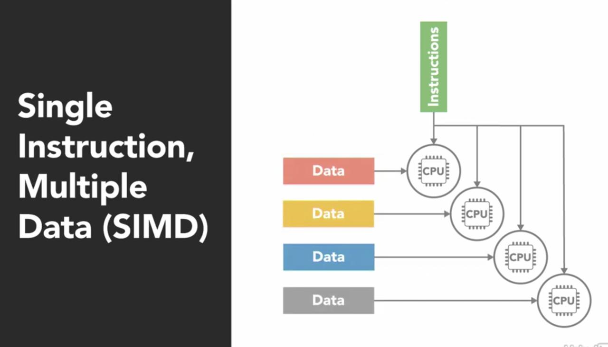
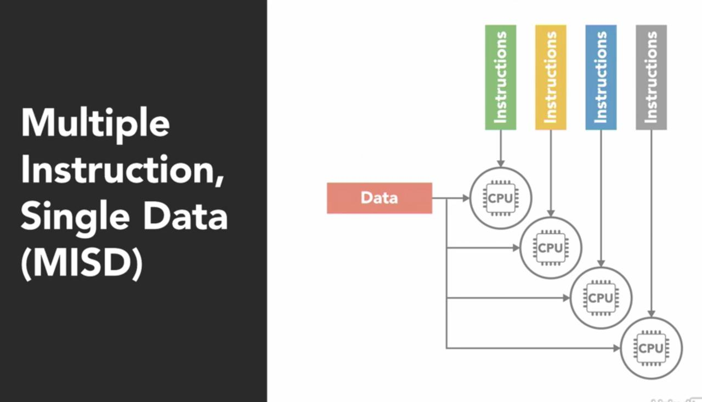
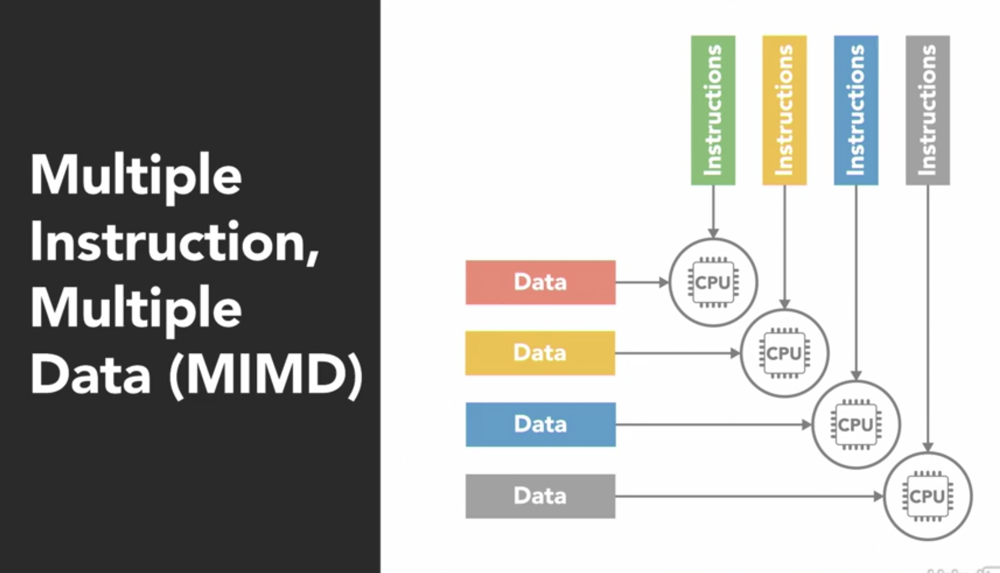
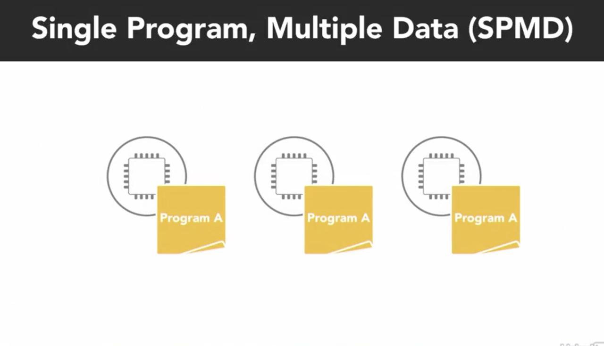
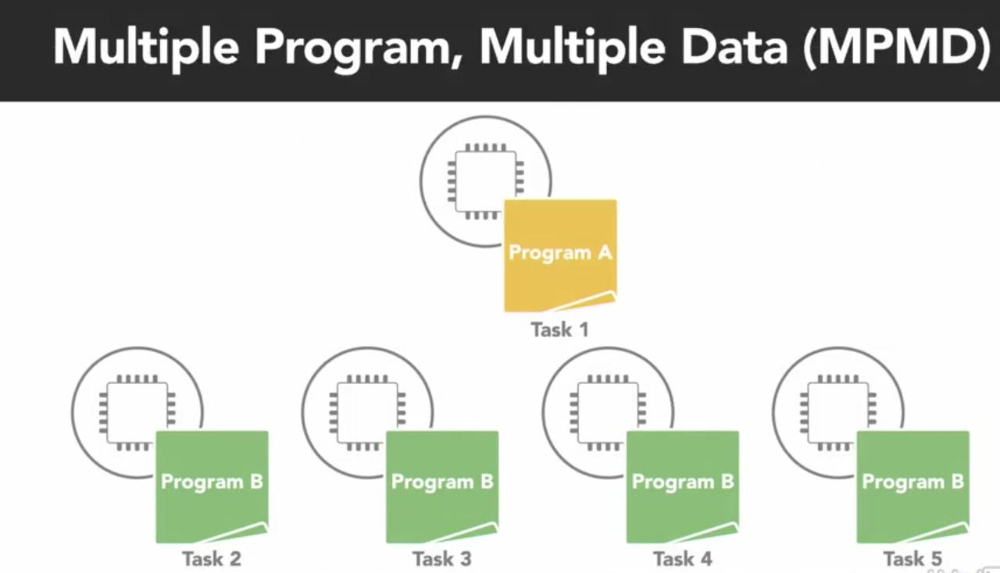
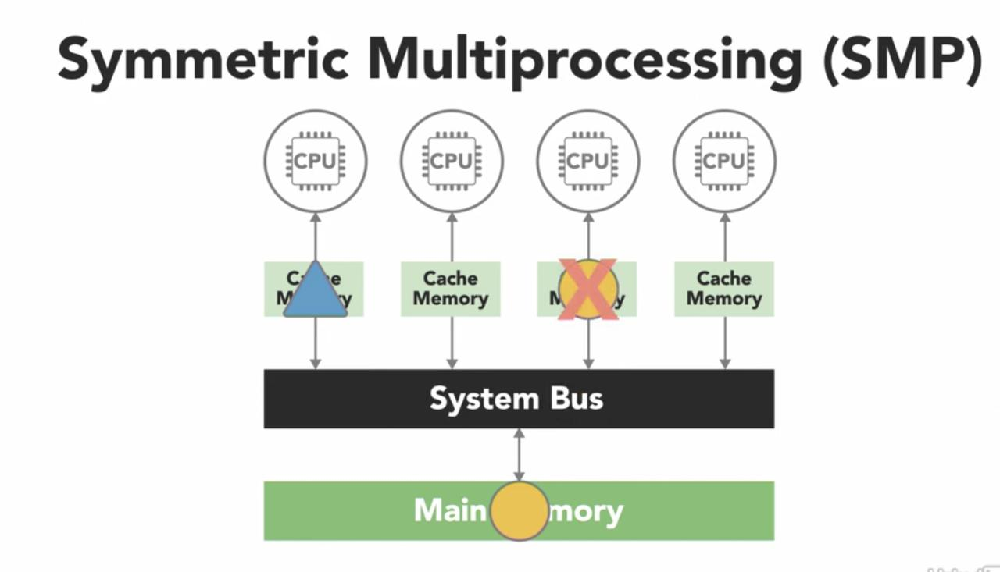
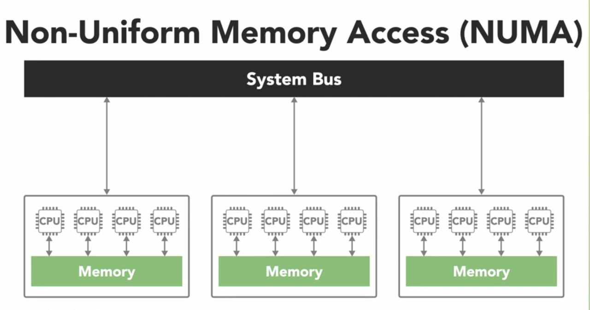
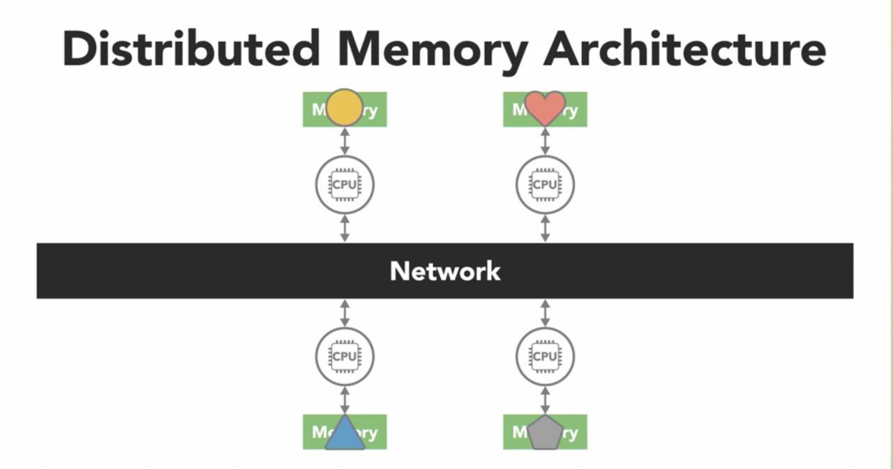

How many snakes do you need? - Parallel computing architectures
The part 1 of this blog series introduced a quick start to working with threads and processes in Python. This article covers some concepts in parallel computing.
Parallel processing architectures¶
A commonly used system to classify processor architecture is Flynn’s Taxonomy. This distinguishes 4 classes of computer architecture based on 2 factors: the number of concurrent instruction streams and number of data streams.

- SISD: Single Instruction Single Data is the simplest of architectures, which operates sequentially using a single processor.
- SIMD: Single Instruction Multiple Data architecture is a parallel computer with multiple processing units. Each processor execute the same instructions but on different data blocks.

This type of architecture is suited for programs that perform the same set of operations on large data sets (like image processing). Most GPUs operate on SIMD. Here, each processor is executing the same instruction, at the same time.
- MISD: Multiple Instructions Single Data is one where multiple processes operate on the same data element. This type does not make much sense and is not very common.

- MIMD: Multiple Instructions Multiple Data, is one where multiple processors can work on different sets of instructions on different pieces of data.

This type of architecture is the most common and is seen everywhere from multi-core phones & computers, supercomputers etc.
MIMD architecture¶
The MIMD is further subdivided into SPMD and MPMD models.
- SPMD: Single Program Multiple Data looks a lot like SIMD, however, each processor is executing a copy of the same program but asynchronously and different tasks of the program. SPMD is the most common stye of parallel programming.

- MPMD: Multiple Programs, Multiple Data is when processors are each executing separate programs on different pieces of data. MPMD usually involves an orchestrator node and multiple worker nodes. MPMD is not as common as SPMD but suitable for programs that exhibit functional decomposition ability.

Shared vs Distributed memory¶
In a parallel computing architecture, the access to data could fall under one of two categories - shared vs distributed. In a shared model, all processors have access to a shared pool of memory. If one of the processes changes some data, all other processes see the change. The shared model is further subdivided into categories: Uniform Memory Access (UMA) and Non-Uniform Memory Access (NUMA)
There are many types of UMA architectures, but the most common is the Symmetric Multiprocessing System (SMP). In a SMP, each processor is connected to a single shared memory using a system bus. In modern computers, each processor has its own cache which is a smaller, faster piece of memory that only it can see.

Processors use cache to store data it frequently works with. However, when a process updates a value in the cache, that needs to be flown to the shared memory before another process reads that value. This phenomena is called cache coherency and is handled by the processor hardware.
The other type of shared memory architecture is the NUMA which is made by connecting multiple SMP together over a system bus. The access to memory is non-uniform as some processors can have access quicker than others as it takes longer to read data over a bus.

Shared memory architectures are easier to program with, but they don’t always scale well. Adding more processors to the system adds more memory but introduces the complexity of cache coherency and puts a strain on the system bus. Further, the programmer needs to synchronize memory access.
Distributed memory architecture¶
In a distributed memory architecture, each processor has its own memory with its own address space. Thus a global address space does not exist. The processors are connected over a network (like ethernet) and if a process makes a change to the data, it is not seen by other processes unless the programmer explicitly defines how data is to be communicated between nodes.

The advantage of dist. memory arch is that it is easily scalable. This structure makes it cost-effective to use commodity hardware to build large distributed systems.